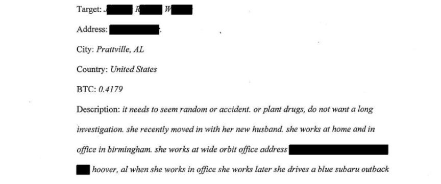
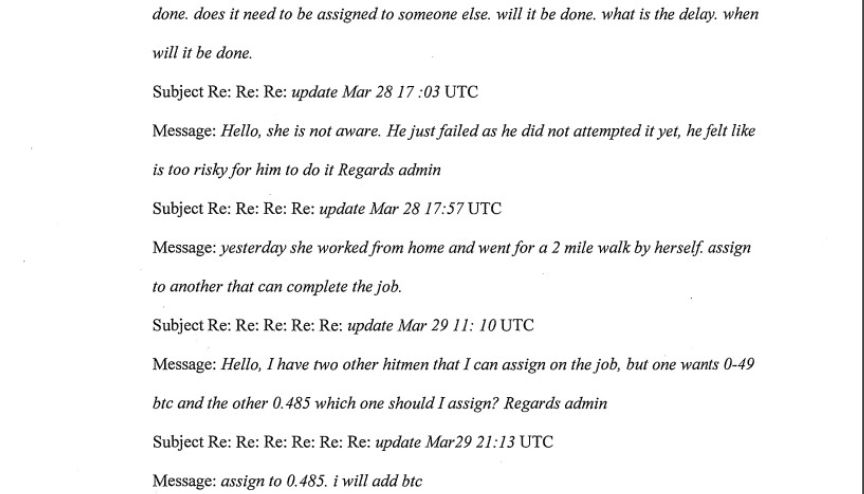
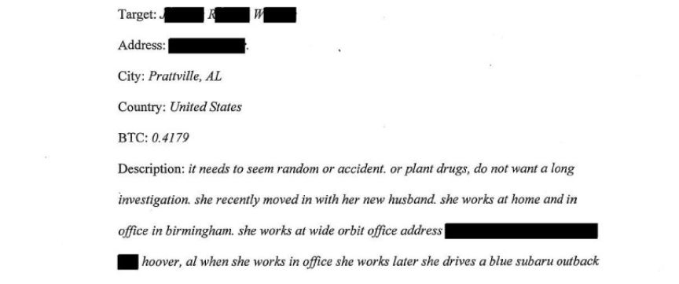
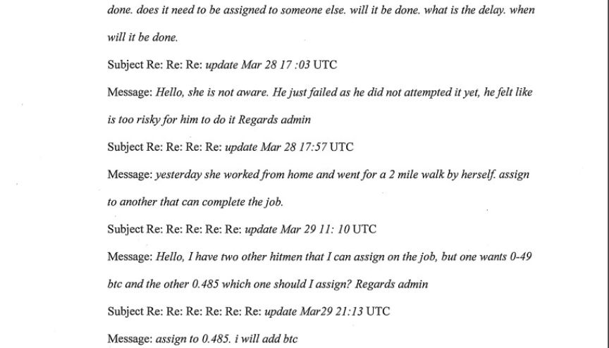

A Tennessee Woman Attempted to Hire a Hitman
~2 min read | Published on 2023-06-06, tagged Arrested, Murder-for-Hire using 491 words.
A Tennessee woman was arrested and detained for trying to hire a hitman on the dark web to murder the wife of a man she met on a dating site.
According to the criminal complaint, in addition to paying over $9,700 to a dark web murder-for-hire site called Online Killers Market, Melody Sasser of Knoxville, Tennessee, was stalking the target of the murder-for-hire plot through a fitness tracking application.
The Homeland Security Investigations received information regarding the murder-for-hire plot from an undisclosed foreign law enforcement agency in April 2023. The information contained messages exchanged between the administrator of Online Killers Market and a user going the username "cattree."
The information revealed that Cattree placed the order on January 11, 2023, after depositing Bitcoin into the site's escrow. In the order details, Cattree included the target's name, address, and description of her car and its license plate number. Cattree also uploaded the target's photo to the site and asked the admin to make sure the hit was made to look like an accident.

The HSI contacted the target and told her that she was the target of a murder-for-hire plot. On being interviewed, the target said she suspected Sasser was the one behind the plot.
The target told the investigators that after learning of her engagement in late 2022, Sasser traveled to Alabama and told her that she hoped she and her husband would fall off a cliff and die.She also disclosed that her car and been keyed and that she had been receiving threatening phone calls from Voice Over IP (VOIP) phone numbers.
The target's husband told the investigators that he had met Sasser through Matching.com. He also revealed that Sasser had been helping him plan hikes while he was living in Knoxville.
Messages between the site's admin and Cattree showed that Cattree was so obsessed with having the target murdered, that she was tracking her movements. She even agreed to pay more for a hitman to take her order.

In one of the messages sent on March 27, 2023, told the site admin, "yesterday she worked from home and went for a 2 mile walk by herself." The investigators confirmed through a fitness tracking app used by the couple that the target had indeed walked for exactly 2 miles on March 27, 2023. The target also confirmed she worked from home on that day. This led the investigators to the conclusion that Cattree had been monitoring the couple's movements through the fitness app.
Tracing of the bitcoin deposited to the murder-for-hire site led the investigators to Coinhub, a Bitcoin ATM operator. Information acquired from Coinhub revealed that the bitcoin sent to Online KIllers Market had been purchased in four transactions from an ATM in Knoxville. Photos captured during the transactions showed that Sasser made the transactions.
Sasser has been in detention since her arrest on May 18. She's set to appear before a court later this week.
Melody Sasser
According to the criminal complaint, in addition to paying over $9,700 to a dark web murder-for-hire site called Online Killers Market, Melody Sasser of Knoxville, Tennessee, was stalking the target of the murder-for-hire plot through a fitness tracking application.
The Homeland Security Investigations received information regarding the murder-for-hire plot from an undisclosed foreign law enforcement agency in April 2023. The information contained messages exchanged between the administrator of Online Killers Market and a user going the username "cattree."
The information revealed that Cattree placed the order on January 11, 2023, after depositing Bitcoin into the site's escrow. In the order details, Cattree included the target's name, address, and description of her car and its license plate number. Cattree also uploaded the target's photo to the site and asked the admin to make sure the hit was made to look like an accident.

The order details
The HSI contacted the target and told her that she was the target of a murder-for-hire plot. On being interviewed, the target said she suspected Sasser was the one behind the plot.
The target told the investigators that after learning of her engagement in late 2022, Sasser traveled to Alabama and told her that she hoped she and her husband would fall off a cliff and die.She also disclosed that her car and been keyed and that she had been receiving threatening phone calls from Voice Over IP (VOIP) phone numbers.
The target's husband told the investigators that he had met Sasser through Matching.com. He also revealed that Sasser had been helping him plan hikes while he was living in Knoxville.
Messages between the site's admin and Cattree showed that Cattree was so obsessed with having the target murdered, that she was tracking her movements. She even agreed to pay more for a hitman to take her order.

Messages between the site's admin and Cattree
In one of the messages sent on March 27, 2023, told the site admin, "yesterday she worked from home and went for a 2 mile walk by herself." The investigators confirmed through a fitness tracking app used by the couple that the target had indeed walked for exactly 2 miles on March 27, 2023. The target also confirmed she worked from home on that day. This led the investigators to the conclusion that Cattree had been monitoring the couple's movements through the fitness app.
Tracing of the bitcoin deposited to the murder-for-hire site led the investigators to Coinhub, a Bitcoin ATM operator. Information acquired from Coinhub revealed that the bitcoin sent to Online KIllers Market had been purchased in four transactions from an ATM in Knoxville. Photos captured during the transactions showed that Sasser made the transactions.
Sasser has been in detention since her arrest on May 18. She's set to appear before a court later this week.